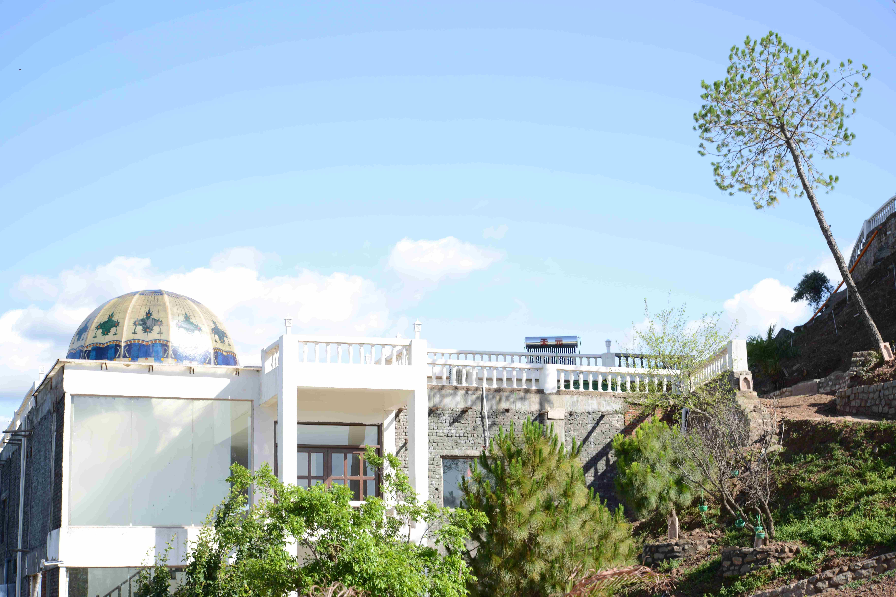
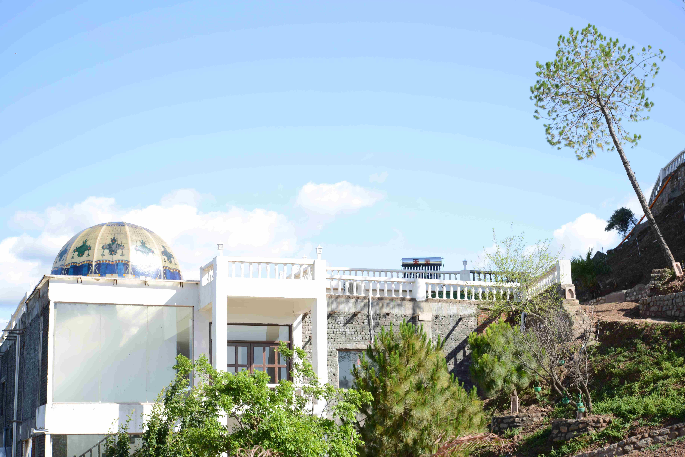
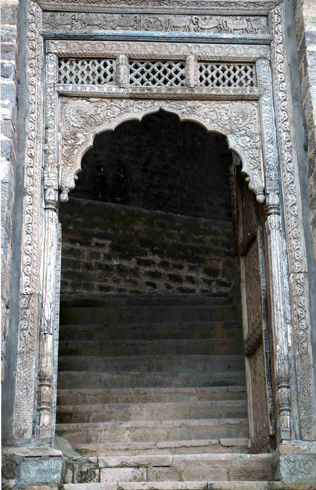
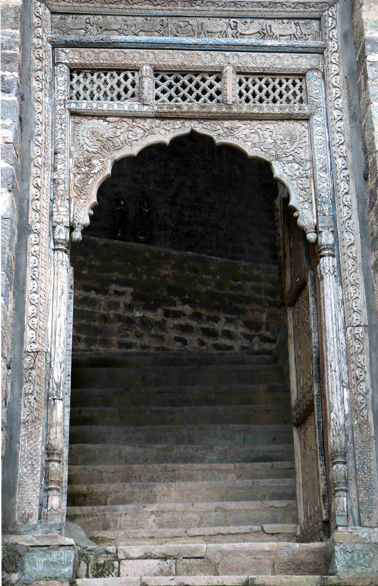

Director’s Message: On Leadership & Vision
Dear Students,
We live in times where leaders must understand both policy and technology, governance and global change. Civil servants of tomorrow will not only manage public institutions—they will steer India through complex challenges like AI regulation, digital inclusion, climate justice, and national security.
This programme is built to create such leaders.
By integrating UPSC preparation with AI literacy and leadership training, we aim to give you a rare advantage—intellectual depth, ethical clarity, and futuristic vision. The residential model at Fort Ramshehar ensures you are free from distraction and immersed in a community of discipline, focus, and purpose.
As you begin this journey, know that you're not just preparing for an exam—you’re being groomed for service, leadership, and legacy.
With best wishes,
Mandeep Mishra
Director and Chief Mentor
Director’s Message: On Leadership & Vision


 



 
